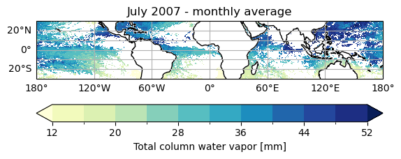
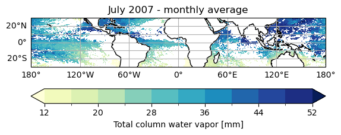
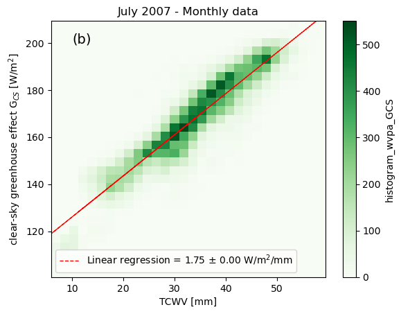
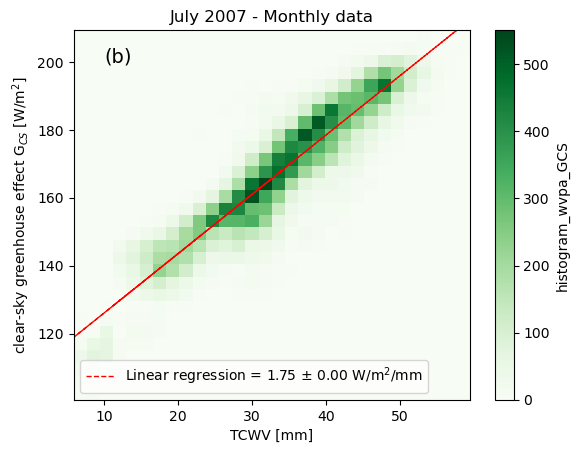

1.1.1. Water vapor amplification of Earth’s Greenhouse Effect#
Production date: 17-04-2025
Produced by: CNRS
🌍 Use case: Observing the clear sky greenhouse effect and estimating the water vapour feedback in the longwave.#
❓ Quality assessment question:#
Can satellite measurements reproduce the known relationship between clear sky greenhouse effect and total column water vapour (TCWV)?
The water vapour is the most significant greenhouse gases, contributing to about half of the planet’s global greenhouse effect ([1], [2]). As a result, it plays a important role in shaping the Earth’s radiation budget.
The warming induced by a forcing, such as an increase in CO\(_2\) concentrations, leads to higher levels of water vapor through the Clausius-Clapeyron relationship [3]. The increasing of water vapor, in turn, intensifies the greenhouse effect because of its strong radiative properties in the thermal infrared : this is the well-known positive water vapor feedback that amplifies by almost a factor of two the initial warming [4]. This positive feedback mechanism underscores the critical importance of monitoring and comprehending the water vapour concentrations to accurately assess and predict its impacts on the Earth’s climate system.
In this analysis, we study the contribution of water vapor to the greenhouse effect and aim to determine the relationship between the two variables. We quantify the amount of water vapor in the atmosphere using its vertially integrated value, known as Total Column Water Vapor (TCWV), which is obtained from satellite observations. The data used in this study is Monthly and 6-hourly total column water vapour over ocean from 1988 to 2020 derived from satellite observations [described here], available on the Climate Data Store of the Copernicus Climate Change Service.
📢 Quality assessment statement#
These are the key outcomes of this assessment
The clear sky greenhouse effect is approximately a linear function of the total column water vapour [5].
This analysis is performed with one month of data. Over this month, the relationship between the greenhouse effect, estimated for clear sky situations, and the total column water vapour is consistent with the literature, the value of the slope being in agreement with [6], [7] and [8].
An estimate of the clear sky water vapour feedback is computed by assuming that the relative humidity remains constant with warming, as in [4]. The humidity feedback obtained is \(2.5 \pm 0.2\) \(W/m^{2}/ K\) which is in agreement with the IPCC report on this topic (Chapter 7, [9])
Despite assumptions and the use of only one month, the general agreement with the literature highlights the value of this water vapor data record for studies of the greenhouse effect of water vapor. The combination with other data records (cloud amount, sea surface temperature, and outgoing longwave radiation) of the CDS shows also the relevance of these data records for such climate studies.
📋 Methodology#
The relationship between clear sky geenhouse effect and total column of water vapour is examined using the available datasets from the Climate Data Record (CDR) for sea surface temperature, clouds, and outgoing longwave radiation, detailed below.
These datasets are daily and the analysis focuses on the tropical ocean over February 2007.
The Greenhouse effect#
The greenhouse effect (G, in W/m\(^2\)) is defined by the difference, in terms of longwave thermal radiation, between the radiation emitted to space at the top of the atmosphere, which is the OLR (in W/m\(^2\)), and the radiation emitted upward by the surface noted \(F_{surf}\): $\( \text{G} = \text{F}_{surf} - \text{OLR} \)$
Where \(\text{F}_{surf} = \epsilon_{surf} \ \sigma \ T_{surf} ^4 \)
\(T_{surf}\) is the surface temperature (in K), \(\epsilon_{surf}\) is the surface emissivity (unitless) and \(\sigma\) is the Stefan-Boltzmann constant (\(\sigma = 5.67 \ 10^{-8}\) W/m\(^2\)/K\(^4\)).
With this definition, G has always positive values, the atmosphere trapping a part of the upward longwave radiation emitted by the surface, this trapping being done by greenhouse gases, clouds and, for a smaller part, aerosols. In the absence of clouds and aerosols, the clear sky greenhouse effect \(\text{G}_{CS}\) is dominated by water vapour which accounts for 50 to 60% of the total greenhouse effect ([1], [2]).
{kind=link}
Fig. 1.1.1.1 Contributions of the individual absorbers to the clear sky greenhouse effect. Numbers taken from [5].#
The estimation of \(\text{G}_{CS}\) is performed by selecting only clear sky regions identified at the daily scale using the cloud fraction cover.
The computation of \(\text{F}_{surf}\) assumes that the sea water emits thermal radiation very similar to blackbody emission, therefore \(\epsilon_{surf}=1\). Considering a blackbody emission rather the true emissivity of sea water yield a small difference of less than 1% as discussed by [5].
The obtained \(\text{G}_{CS}\) is then compared with the corresponding TCWV, and their relationship is visualized as a function of TCWV. Lastly, this derived relationship is utilized to estimate the water vapour feedback, \(f_{wv}\).
Several methods are used to compute the greenhouse effect and the water vapor feedbacks [6]:
a partial radiative perturbation method, comparing a control climate and a perturbed climate
a radiative kernel technique, comparing point-by-point perturbed profiles of water vapor and their radiative effect
a linear regression between the clear sky longwave top-of-the-atmosphere flux to the global mean.
Here we use the latter method to assess the relevance of CDS data for estimating the water vapor feedback
The water vapour feedback#
The fundamental Clausius-Clapeyron equation gives the saturation vapor pressure \(e_{sat}(T)\) (in hPa) at a given temperature \(T\): $\( e_{sat}(T) = 6.11 \times \exp{ \left[ -\frac{L_v}{R_v} \times \left(\frac{1}{T} - \frac{1}{273.15}\right) \right]} \)$
with \(L_v = 2.5 \ 10^6\) (J/kg) is the latent heat for vaporisation and \(R_v = 461.51\) (J/kg/K) is the specific gas constant for water vapor. \(e_{sat}(T)\) defines the capacity of the atmosphere to hold water vapor before it condensates, for a given air temperature \(T\).
According to this equation, it can be shown that the sensitivity of \(e_{sat}(T)\) to a temperature increase is given by:
with \(\alpha(T)\) standing for the Clausius-Clapeyron scaling, which depends strongly on \(T\).
Most water vapor resides in the lower troposphere and in the tropics because there temperatures are warmesest. For air temperature typical of the tropical lower atmosphere, ranging between 270 and 310K, \(\alpha(T)\) has values between 6.5 to 7.5% for a 1-K increase of air temperature (see [8]).
As stated in numerous studies addressing the perturbation of the hydrological cycle to surface warming (see [3], [7], [9] and [10]) tropospheric relative humidity tends to be maintained fixed as climate warms. The small changes observed in the tropospheric relative humidity do not affect significantly the column integrated water vapor [11].
Formally, the global climate feedback \(f\) (in W/m\(^2\)/K) represents the sensitivity of the global energy balance, which considers longwave and shorwtave fluxes, to a perturbation of the surface temperature.
Here we consider the clear sky longwave feedback and the water vapor contribution to this feedback, and this feeback parameter \(f\) can be broken down into several components, among them the water vapor.
For the present analysis, we look at the part of the clear sky greenhouse effect \(\text{G}_{CSwv}\) due to water vapor. Then, and using the Clausius-Clapeyron scaling, the water vapor feedback \(f_{wv}\) can be written as:
Where \(d \ TCWV / d \ T_{surf}\) represents the water vapor response to the temperature variations, while \(d \ \text{G}_{CS w} / d \ TCWV\) is the net change in upwelling thermal radiation caused by the associated changes in the water vapor content.
The TCWV is the integral of the water vapor amount q (in kg/kg) over the atmospheric column. Therefore, \(TCWV \sim q\). Moreover, with the approximation of a fixed atmospheric relative humidity with surface warming, then \( d q / \overline{q} = d e_{sat}/ \overline{e_{sat}}\), the notation \(\overline{X}\) denoting a spatial average of the parameter \(X\).
Combining all the parameters together, assuming constant RH and a 1-K surface warming, it comes that the water vapor feeback can be computed using TCWV according to: $\( f_{wv} \ = \ \frac{d \ \text{G}_{CS wv}}{d \ TCWV} \ \overline{TCWV} \ \alpha(T) \)$
Method#
The analysis comprises the following steps:
1. Choose the data to use and setup code
Import the relevant packages.
Define the parameters of the analysis and set the dataset requests
2. Download the datasets and perform space-time aggregation
Download the variables of interest: Columnar water vapor is obtained from Monthly and 6-hourly total column water vapour over ocean from 1988 to 2020 derived from satellite observations [TCWV], Clear sky is obtained from Cloud properties global gridded monthly and daily data from 1979 to present derived from satellite observations [clouds], Surface Temperature is obtained from Sea surface temperature daily data from 1981 to present derived from satellite observations [SST], Outgoing Longwave Radiation is obtained from Earth’s radiation budget from 1979 to present derived from satellite observations [OLR].
The datasets are colocated in space and time over the Tropics.
Gridboxes with cloudy coverage greater than 10% are rejected. Moreover, only the well retrieved TCWV and SST are considered. The amount of radiation emitted by the surface is computed assuming blackbody behavior of the ocean (\(\epsilon_{ocean}=1\)).
The clear sky greenhouse effect G\(_\text{CS}\) is obtained by subtracting outgoing lonwave radiation and surface emission longwave emission.
3. Overview of the geophysical variables of interest
Maps of TCWV, CFC, SST and OLR are described as well as of G\(_\text{CS}\).
4. Plot and description of the results
The clear sky greenhouse effect is plotted as a function of the TCWV. The slope of the linear regression is computed and used to estimate the water vapor feedback \(f_{wv}\). Final results are compared with proper references.
📈 Analysis and results#
Choose the data to use and setup code#
Import packages#
Define parameters#
This use case is developed for one month of data (July 2007) and for the tropical belt, restricted to 30\(^\circ\)S-30\(^\circ\)N.
Set the data request#
Four datasets are requested :
Total Column Water Vapor (TCWV)
Cloud Fraction Cover (CFC)
Sea Surface Temperature (SST)
Outgoing Longwave Radiation (OLR)
Download the datasets and perform space-time aggregation#
The datasets are now downloaded.
100%|██████████| 1/1 [00:00<00:00, 3.61it/s]
/data/common/miniforge3/envs/wp5/lib/python3.11/site-packages/earthkit/data/readers/netcdf/fieldlist.py:318: FutureWarning: In a future version, xarray will not decode timedelta values based on the presence of a timedelta-like units attribute by default. Instead it will rely on the presence of a timedelta64 dtype attribute, which is now xarray's default way of encoding timedelta64 values. To continue decoding timedeltas based on the presence of a timedelta-like units attribute, users will need to explicitly opt-in by passing True or CFTimedeltaCoder(decode_via_units=True) to decode_timedelta. To silence this warning, set decode_timedelta to True, False, or a 'CFTimedeltaCoder' instance.
return xr.open_dataset(self.path_or_url)
/data/common/miniforge3/envs/wp5/lib/python3.11/site-packages/earthkit/data/readers/netcdf/fieldlist.py:202: FutureWarning: In a future version, xarray will not decode timedelta values based on the presence of a timedelta-like units attribute by default. Instead it will rely on the presence of a timedelta64 dtype attribute, which is now xarray's default way of encoding timedelta64 values. To continue decoding timedeltas based on the presence of a timedelta-like units attribute, users will need to explicitly opt-in by passing True or CFTimedeltaCoder(decode_via_units=True) to decode_timedelta. To silence this warning, set decode_timedelta to True, False, or a 'CFTimedeltaCoder' instance.
return xr.open_mfdataset(
100%|██████████| 1/1 [00:00<00:00, 3.92it/s]
100%|██████████| 1/1 [00:00<00:00, 14.78it/s]
100%|██████████| 1/1 [00:00<00:00, 1.62it/s]
Temporal and spatial aggregation#
All data records are provided at different spatial and temporal resolutions :
Cloud Fraction Cover : 0.25\(^\circ\) / 1-day
Sea Surface Temperature : 0.05\(^\circ\) / 1-day
Outgoing Longwave Radiation : 0.25\(^\circ\) / 1-day
Total Column Water Vapor : 0.5\(^\circ\) / 6-hourly
This it is a cross-variable analysis, the study requires to process all the datasets at the same horizontal and temporal resolutions.
Note that for the TCWV data record, a reversal of the latitudes is necessary as the data is stored North-to-South, while for the others data records the storage is South-to-North.
The common spatial aggregation is 0.5\(^\circ\) and the data records are processed at the daily and monthly scales.
Computation of the greenhouse effect#
The variables (daylies and monthlies) are stored into data frames for a better handling.
Then the clear sky scenes are selected using the CFC. A threshold of 10% of cloud cover within each grid cell is a good compromise between the definition of the clear sky greenhouse effect (mostly clear skies, regardless of cloud altitude) and the number of scenes that are retained for the representativity of the analysis. The grid cells are also filtered from erroneous estimates.
The clear sky greenhouse effect (G\(_{CS}\)) and the water vapor feedback paramter (\(f_{wv}\)) are then computed using the methods described above.
/data/common/miniforge3/envs/wp5/lib/python3.11/site-packages/xarray/coding/times.py:650: RuntimeWarning: invalid value encountered in cast
flat_num = flat_num.astype(np.int64)
/data/common/miniforge3/envs/wp5/lib/python3.11/site-packages/xarray/coding/times.py:650: RuntimeWarning: invalid value encountered in cast
flat_num = flat_num.astype(np.int64)
/data/common/miniforge3/envs/wp5/lib/python3.11/site-packages/xarray/coding/times.py:650: RuntimeWarning: invalid value encountered in cast
flat_num = flat_num.astype(np.int64)
Overview of the geophysical variables of interest#
Total Column of Water Vapour and Cloud Fraction Cover#
The Total Column of Water Vapour (TCWV) is obtained from the HOAPS product, provided by EUMETSAT, at 0.5° resolution. The TCWV is retrieved over ice-free ocean surfaces using the microwave spectrum as measured by the instruments SSM/I and SSMIS using the Hamburg Ocean Atmosphere Parameters and Fluxes from Satellite Data (HOAPS) algorithm [12].
The Cloud Fraction Cover (CFC) is obtained from the CLARA-A3 product, provided by EUMETSAT at 0.25° resolution. The CFC is obtained over all surfaces using AVHRR measurements [13].
The TCWV dataset in this assessment is considered at 0.5° over tropical oceans at a 6-hourly resolution.
The maps below show the TCWV (averaged over the 6-hourly time steps of the day) and the CFC for July 1st 2007.

From these two maps, we can see that the highest values of TCWV are associated to cloudy situations and more specifically to storms. Some missing values are visible within areas of high TCWV, and those are where precipitation occurs in the cloudy areas for which no TCWV is retrieved [12].
Sea Surface Temperature and the Outgoing Longwave Radiation#
The daily estimates of Sea Surface Temperature (SST) are based on observations from multiple satellite sensors, and it is produced by the European Space Agency (ESA) SST Climate Change Initiative (CCI) project [14]. This Climate Data Record cover the entire globe with a resolution of 0.05°.
The Outgoing Longwave Radiation (OLR) is obtained from the CLARA-A3 product, provided by EUMETSAT at 0.25° resolution. The OLR is obtained over all surfaces using AVHRR measurements [13].
The maps below show the SST and the OLR for July 1st 2007.


The patterns of SST are similar to the patterns of TCWV, and this is mostly due to the Clausius-Clapeyron relationship recalled in The water vapour feedback : as surface temperature is higher, there is more evaporation and thus more water vapor in the atmosphere.
The OLR is a combination of several parameters that emit longwave radiation to space : the surface, the atmospheric gases and the clouds.
Minima of OLR correspond to high-altitude and optically thick clouds that can be also found from the CFC map above (although no cloud altitude is provided). The minima are thus linked to the major convective areas of the tropics: Central America, the Sahelian Africa band, India and the Indonesian Warm Pool.
Maxima of OLR are located over cloud-free regions, and is a combination of the surface (SST map) and the cloud-free atmosphere above (TCWV map). The maxima are found on both sides (North and South) of the convective areas.
The monthly Clear Sky Greenhouse Effect#
The maps below show the clear sky greenhouse effect G\(_\text{CS}\) for July 2007 and the corresponding map of column water vapor TCWV.
 

As expected, the largest values of G\(_\text{CS}\) are obtained where the TCWV is highest: as the amount of water vapour in the atmospheric column is high, there is a high trapping of upwelling thermal radiation.
Plot and description of the results#
Scatter plots: comparison of daily and monthly scales#
Before evaluating the contribution of water vapor to the clear sky greenhouse effect, a sanity check is done by comparing the rate of change of G\(_\text{CS}\) for a given change in sea surface temperature. This sanity check allows to compare with reference studies using satellite data.


Figure 1: Distributions of the clear sky greenhouse effect G\(_{CS}\) according to SST for (a) daily data and (b) monthly data. The colorscales represent the density of points. The red dashed line are the linear regressions, with the slope and its uncertainty reported on the top left of each figures.
The slopes of the regression lines slightly differ at the two scales: 5.94 W/m\(^2\)/K for daily data (Fig. 1a) and 5.86 W/m\(^2\)/K for monthly data (Fig. 1b).
Despite these slight differences, the value of the slopes \(d \ G_{CS}/d T_{surf}\) are consistent with the findings of [15], [16] and [17], with reported values for given months ranging from 5.6 W/m\(^2\)/K to 6.3 W/m\(^2\)/K (monthly averages).
The contribution by water vapor to this sensitivity is estimated by looking at the linear regression \(d \ G_{CS}/d \ TCWV\), and the slope of this regression is estimated using daily data and monthly data to have a sensitivity of this value to the temporal scale.
 

Figures 2 (top) and 4 (bottom) : Density diagrams of the clear sky greenhouse effect G\(_{CS}\) according to bins of TCWV for daily data (top) and monthly data (bottom). The colorscales represent the density of points. The red dashed line are the linear regressions, with the slope and its uncertainty reported on the bottom left of each figures.
The results show a linear relationship between the clear sky greenhouse effect and the Total Columns of Water Vapour, in agreement with previous research (see [5], [6] and [7]).
According to the section ‘The water vapour feedback’ in the Methodology Chapter, those results can be used to estimate \(f_{wv}\):
As stated in the The Greenhouse effect, the contribution of water vapor to the clear sky greenhouse effect is estimated to be \(\sim\) 60%. Therefore, we can reasonably consider that 60% of the slope G\(_{CS}\)=f(TCWV) corresponds to the water vapor contribution \(\text{G}_{CS wv}\)
slope: 1.75 W/m^2/mm
tropical mean TCWV: 33.81 mm
tropical mean SST: 299.69 K
feedback: 2.48 W/m^2/K
This result falls within the range of uncertainty of the water vapor feedback reported in the IPCC report Chapter 7 ([9]) and summarized in Figure 7.20 (inset on the ‘Global warming contributions from individual radiative feedbacks’). The reported values range between 2.2 and 3.5 W/m\(^2\)/K.
Here we have looked at the relationship between clear sky greenhouse effect and TCWV is studied on the time scale of one month. However, although the findings are consistent with the literature, climate feedbacks are generally estimated at longer time scale in order to take into account the role of natural climate variability (including El Nino events for instance).
ℹ️ If you want to know more#
Key resources#
Some key resources and further reading were linked throughout this assessment.
The CDS catalogue entries for the data used in this assessment are:
Monthly and 6-hourly total column water vapour over ocean from 1988 to 2020 derived from satellite observations: https://cds.climate.copernicus.eu/datasets/satellite-total-column-water-vapour-ocean
Cloud properties global gridded monthly and daily data from 1979 to present derived from satellite observations: https://cds.climate.copernicus.eu/datasets/satellite-cloud-properties
Sea surface temperature daily data from 1981 to present derived from satellite observations: https://cds.climate.copernicus.eu/datasets/satellite-sea-surface-temperature
Earth’s radiation budget from 1979 to present derived from satellite observations: https://cds.climate.copernicus.eu/datasets/satellite-earth-radiation-budget
Code libraries used:
C3S EQC custom functions,
c3s_eqc_automatic_quality_control, prepared by B-Open
And some resources on the greenhouse effect of water vapor and its feedback :
References#
[1] Schmidt G. A., Ruedy R. A., Miller R. L., and A. A. Lacis (2010), Attribution of the present‐day total greenhouse effect,J. Geophys. Res.,115, D20106, doi:10.1029/2010JD014287
[2] Kiehl J. T. and K. Trenberth (1997), Earth’s Annual Global Mean Energy Budget, Bull. Am. Meteorol. Soc., 78, 197-208, https://doi.org/10.1175/1520-0477(1997)078<0197:EAGMEB>2.0.CO;2
[3] Manabe S., and R. T. Wetherald (1967), Thermal Equilibrium of the Atmosphere with a Given Distribution of Relative Humidity, J. Atmos. Sci., 24, 241–259, https://doi.org/10.1175/1520-0469(1967)024<0241:TEOTAW>2.0.CO;2
[4] Held I. and B. Soden (2000), Water vapor feedback and global warming, Annu. Rev. Energy Environn., 25:441-75, doi:10.1146/annurev.energy.25.1.441
[5], Koll D. and T. Cronin (2018) Earth’s outgoing longwave radiation linear due to H2O greenhouse effect, Proc. Nat. Ac. Sci., 115 (41) 10293-10298, doi:10.1073/pnas.1809868115
[6] Roca R., Viollier M., Picon L., and M. Desbois (2002), A multisatellite analysis of deep convection and its moist environment over the Indian Ocean during the winter monsoon, J. Geophys. Res., 107(D19), doi:10.1029/2000JD000040.
[7] Gordon N., A. Jonko, P. Forster and K. Shell (2013), An observationally based constraint on the water-vapor feedback, J. Geophys. Res., 118, 12,435-12,443, doi:10.1002/2013JD020184.
[8] Raghuraman S. P., D. Paynter and V. Ramaswamy (2019), Quantifying the drivers of the clear sky greenhouse effect, 2000-2016, J. Geophys. Res, 124, 11,354-11,371, https://doi.org/10.1029/2019JD031017
[9] Forster P., Storelvmo T., Armour K., Collins W., Dufresne J-L, Frame D., Lunt D.J., Mauritsen T., Palmer M.D., Watanabe M., Wild M., and H. Zhang (2021), Chapter 7 The Earth’s Energy Budget, Climate Feedbacks, and Climate Sensitivity. In Climate Change 2021: The Physical Science Basis. Contribution of Working Group I to the Sixth Assessment Report of the Intergovernmental Panel on Climate Change. Cambridge University Press, Cambridge, United Kingdom and New York, NY, USA, pp. 923–1054, doi: 10.1017/9781009157896.009.
[10] Inamdar A. and V. Ramanathan (1998), Tropical and global scale interactions among water vapor, greenhouse effect and surface temperature, J. Geophys. Res, 103, D24, 32,177-32,194, doi: https://doi.org/10.1029/1998JD900007
[11] Held I. and B. Soden (2006), Robust responses of the hydrological cycle to global warming, J. Clim., 19, 5686–5699, https://doi.org/10.1175/JCLI3990.1
[12] Andersson A., Fennig K., Klepp C., Bakan S., Graßl H., and J. Schulz (2010), The Hamburg Ocean Atmosphere Parameters and Fluxes from Satellite Data – HOAPS-3, Earth Syst. Sci. Data, 2, 215-234, doi:10.5194/essd-2-215-2010
[13] Karlsson K., Riihelä A., Trentmann J., Stengel M., Solodovnik I., Meirink J., Devasthale A., Jääskeläinen E., Kallio-Myers V., Eliasson S., Benas N., Johansson E., Stein D., Finkensieper S., Håkansson N., Akkermans T., Clerbaux N., Selbach N., Schröder M. and R. Hollmann (2023), CLARA-A3: CM SAF cLoud, Albedo and surface RAdiation dataset from AVHRR data - Edition 3, Satellite Application Facility on Climate Monitoring DOI:10.5676/EUM_SAF_CM/CLARA_AVHRR/V003, https://doi.org/10.5676/EUM_SAF_CM/CLARA_AVHRR/V003
[14] Merchant C. J., Embury O., Bulgin C. E., Block T., Corlett G. K., Fiedler E., Good S. A., Mittaz J., Rayner N. A., Berry D., Eastwood S., Taylor M., Tsushima Y., Waterfall A., Wilson R. and C. Donlon (2019), Satellite-based time-series of sea-surface temperature since 1981 for climate applications. Scientific Data, 6. 223. doi:10.1038/s41597-019-0236-x
[15] Forster P. and J. Gregory (2006), the climate sensitivity and its components diagnosed from earth radiation budget data, J. Clim., 19, 39-52, doi:10.1175/JCLI3611.1.
[16] Ramanathan V. and W. Collins (1991), Thermodynamic regulation of ocean warming by cirrus clouds deduced from observations of the 1987 El Nino, Nature, 351, 27-32.
[17] Kiehl J. and B. Briegleb (1992), Comparison of the observed and calculated sky sky greenhouse effect: implications for climate studies, J. Geophys. Res, 97, 10,037-10,049.